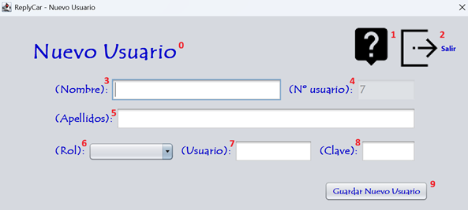

El alta de un usuario consiste en el rellenado de la ficha con sus datos para poder realizar las facturas y el seguimiento de las intervenciones. Sigue las instrucciones de la fotografía para realizar el proceso correctamente. Para realizar el alta de un usuario debe ingresar los datos que corresponden a la numeración expuesta en la fotografía. Vamos a proceder:

0 - Título de la pantalla, descripción de lo que significa la pantalla.
1 - Botón para proceder a leer la ayuda de la aplicación.
2 - Botón para salir de la aplicación.
3 - Ingresa el nombre del usuario.
4 - Nº del usuario que tiene en nuestra empresa.
5 - Ingresa los apellidos del usuario.
6 - Selecciona el rol que va a tener el usuario en la empresa.
7 - Ingresa el usuario que va a tener la persona en la empresa.
8 - Ingresa la clave del usuario que va a tener la persona en la empresa.
9 - Guardar el nuevo usuario.
Nota: Pulsando F1 en la ventana principal, se abrirá esta página de ayuda.